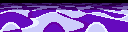
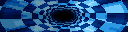

New open firmware and a web app for the DMDoS LED dot-matrix display.
Try the demo in your browser →Install on your displayWhat you need
OpenDMD is open-source firmware and a web app for the DMDoS display: a 128x32 LED dot-matrix display, two chained 64x32 HUB75 panels driven by an ESP32, that plays animated GIFs from a microSD card, like the "DMD" in a pinball machine. DMDoS is a community project from Spain, and dmdos.net is where to get the hardware, build the display and find GIFs. OpenDMD is an alternative firmware for the same board: it plays a DMDoS card as it is, and adds a web app to manage it.
- The firmware runs on the display's own ESP32 board. It plays the card and serves the web app over WiFi.
- The web app at
http://opendmd.local/works in any browser, on a phone or a computer. Previews and GIF preparation run right in the browser, using the same engine as the player. - The simulator plays a card in a desktop window, drawn as LEDs rather than flat pixels.




Recorded from the simulator: the panel's own effects and live items, and the CC0 Kenney Pixel Platformer sprites. Bring your own GIFs, or make them with Create Art.
OpenDMD and DMDoS#
OpenDMD only replaces the software on the ESP32. The hardware, the build and the GIFs come from DMDoS:
- The hardware the parts list, with where to buy each one, is in the Hardware section of dmdos.net. The DMDoS Board V3 is made by MORTACA. What you need sums it up.
- Building it the Assembly section of dmdos.net walks through it step by step, with a photo for each.
- A frame a 3D-printable frame by Janibol of Retromojones is on Thingiverse. The Frame section of dmdos.net has printed kits and wooden frames.
- GIFs the DMDoS GIF pack is in the Software section of dmdos.net. A card set up with it plays on OpenDMD as it is.
OpenDMD is an independent project, not made by or affiliated with DMDoS or MORTACA. The original DMDoS firmware can be put back at any time from the Software section of dmdos.net.
Install#
Open the installer in Chrome, Edge, Opera or
Firefox on a computer, plug the
display's ESP32 board into your computer by USB, and click Install. On first start the
player opens a WiFi network called OpenDMD-Setup: join it, enter your WiFi details, and the
web app is at http://opendmd.local/. Install has the details.
From source: make fw-release && make flasher (see For developers).
What it does#
- Library search, browse by category and platform, preview each GIF with the panel look, send it to the panel, and add, rename or delete GIFs.
- Playlists build them by platform, category and title words, then reorder and switch between them live. A GIF can be a favourite in one playlist and hidden in another.
- Create Art find game screenshots, boxes and logos, or GeoCities GIFs, or use your own picture. Frame it, recolour it, add text, trim frames, and save it as a GIF ready for the panel.
- Smooth motion adds the in-between frames to GIFs that move in jerky steps, without changing the file.
- Live items and effects a clock, scrolling text, a tunnel, Mode 7 rotozoom, a starfield and wireframe shapes, all drawn on the panel and usable in any playlist.
- Looks full colour or a single amber, red, green, blue or white, with optional phosphor glow.
- Schedules a playlist or brightness for parts of the week, and a night mode that turns the panel off or dims it.
- Smooth playback the player prepares a lighter copy of each GIF in the background, so GIFs start quickly and play smoothly.
Screenshots#
| Library | Create Art |
|---|---|
 |
 |
| Now playing | Effects |
 |
 |
| Playlists | On a phone |
 |
 |
The demo card in these screenshots holds the panel's own effects and the Kenney Pixel Platformer sprites (CC0).
Documentation#
The documentation is also at opendmd.github.io.
- What you need, Install and Updating
- The web app, Create Art and Effects and live items
- The SD card: where GIFs go and how their names are read
- Troubleshooting
- For developers: building from source, the crates, the HTTP API
Development#
Everything builds from this repository with make; For developers lists
the toolchains, the common targets and the crates.
License#
Either Apache 2.0 or MIT, at your option. Contributions are dual licensed the same way.
OpenDMD comes with no GIFs. The animations on a DMDoS card are third-party content that this project can't relicense or redistribute: get the DMDoS GIF pack from dmdos.net, or make your own with Create Art. The animations on the OpenDMD site are the panel's own effects and live items, recorded from the simulator, and the CC0 Kenney Pixel Platformer sprites.